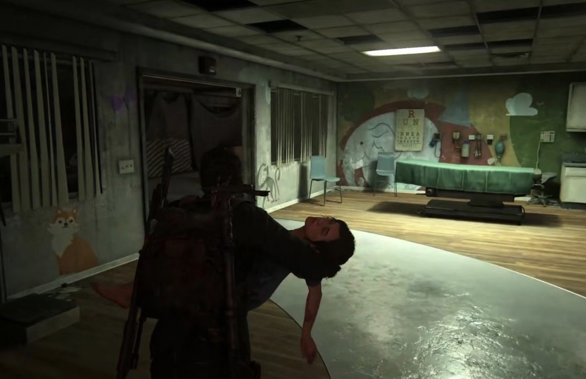
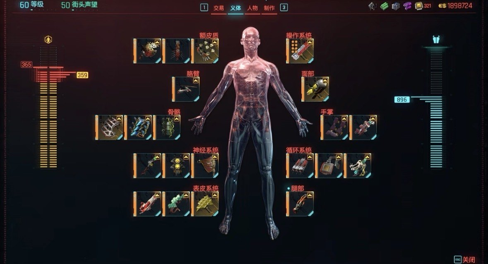
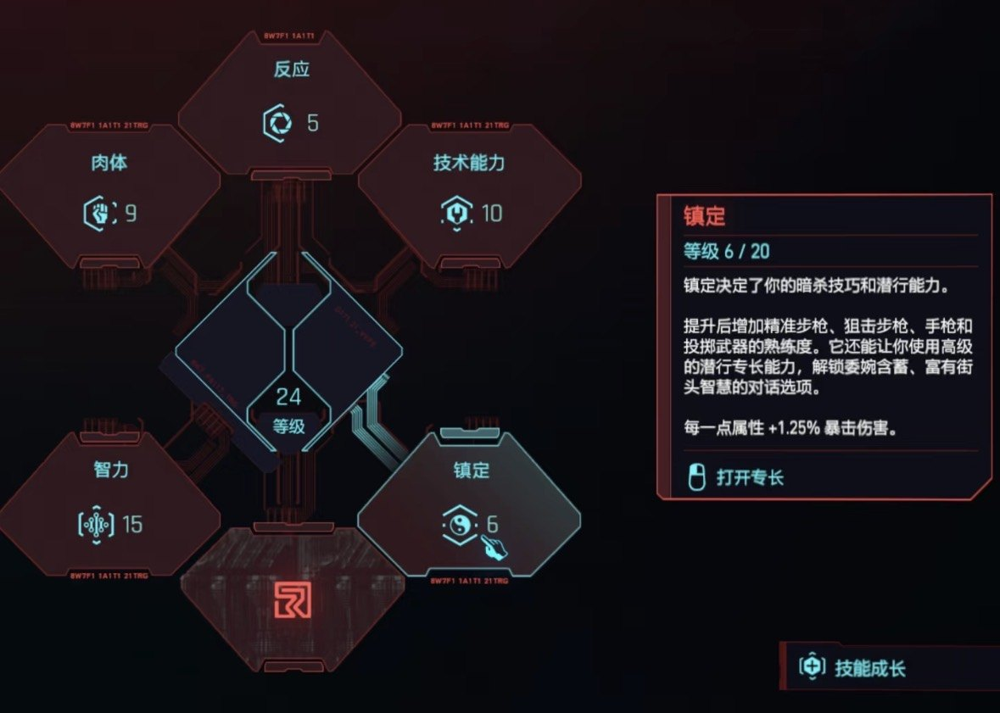

Freedom by design
Player identity in a game is not fixed in the character design. It is built and negotiated between the player and the game’s systems. This essay compares two narrative games that do this in opposite ways: The Last of Us restricts the player to a set role, while Cyberpunk 2077 offers choices whose freedom is shaped by the system itself.


The argument
The two games represent two models of identity. Cyberpunk 2077 invites players to shape who they are through choice; The Last of Us asks them to take on a predefined role and emotional position through restriction. Using three concepts, power, interactivity and immersion, I argue that identity in games is not simply the result of free choice. It is continuously produced and limited by how the game is built.
Power
At the end of The Last of Us, players must make Joel kill the Firefly doctor and take Ellie away, whether or not they agree with him. I read this through Foucault’s idea of sovereign power (Collier, 2009): the game sets the boundaries from above, and makes the player carry out the violence themselves rather than watch it.
Cyberpunk 2077 offers far more choice, yet V can never escape the Relic chip, and Johnny Silverhand keeps intruding on V’s memories, emotions and body. This is closer to biopower: not direct command, but the gradual shaping of a subject through systems, technology and environment.
The former emphasizes “You must become who you are”, while the latter emphasizes “You think you can decide who you are”.
Interactivity
In The Last of Us, players decide how to complete a task but not whether or why, which is Bogost’s (2008) procedural rhetoric at work. In Cyberpunk 2077, a single mission can be solved by fighting, cracking a chip, siding with Militech or negotiating, and the choice carries into later relationships. Yet that freedom stays inside Night City’s rules of violence, capital and technological modification. Building V becomes a kind of identity labour, with the player as a “participant builder”, always within the actions the game system allows.

Immersion
The Last of Us immerses players through emotion: playing as Ellie while Joel is wounded, players take on her vulnerability and responsibility. Cyberpunk 2077 immerses through the body, with a first-person view and a dense open world. But Johnny’s presence keeps unsettling who V is, so immersion here reveals how unstable and controllable identity can be.
What it changed
Game narrative is not only storytelling. It builds the player’s experience and understanding through rules, interaction, perspective, feedback and immersion. This is the direction I want to take into practice: interactive narratives where players’ choices genuinely help generate meaning.
References
- Bogost, I. (2008) ‘The rhetoric of video games’, in Salen, K. (ed.) The ecology of games: connecting youth, games, and learning. Cambridge, MA: MIT Press, pp. 117-140.
- CD Projekt Red (2020) Cyberpunk 2077 [Video game]. Warsaw: CD Projekt Red.
- Collier, S.J. (2009) ‘Topologies of power: Foucault’s analysis of political government beyond “governmentality” ’, Theory, Culture & Society, 26(6), pp. 78-108.
- Consalvo, M. (2007) ‘Gaining advantage: how videogame players define and negotiate cheating’, in Cheating: gaining advantage in videogames. Cambridge, MA: MIT Press, pp. 83-106.
- Farrow, R. and Iacovides, I. (2014) ‘Gaming and the limits of digital embodiment’, Philosophy & Technology, 27(2), pp. 221-233.
- Joshi, A., Mousas, C., Tokey, S.S. and Kao, D. (2025) ‘Exploring player agency in educational video games’, Entertainment Computing, 52, p. 100754.
- Juul, J. and Klevjer, R. (2016) ‘Avatar’, in Jensen, K.B. (ed.) The international encyclopedia of communication theory and philosophy. Chichester: John Wiley & Sons.
- Naughty Dog (2013) The Last of Us [Video game]. San Mateo, CA: Sony Computer Entertainment.
- Ruberg, B. (2019) Video games have always been queer. New York: New York University Press.